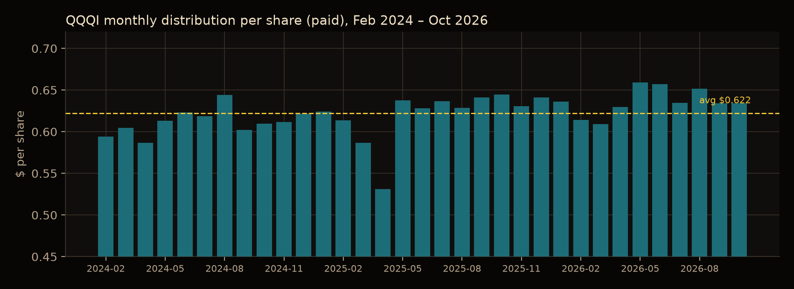
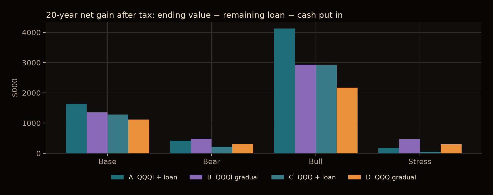
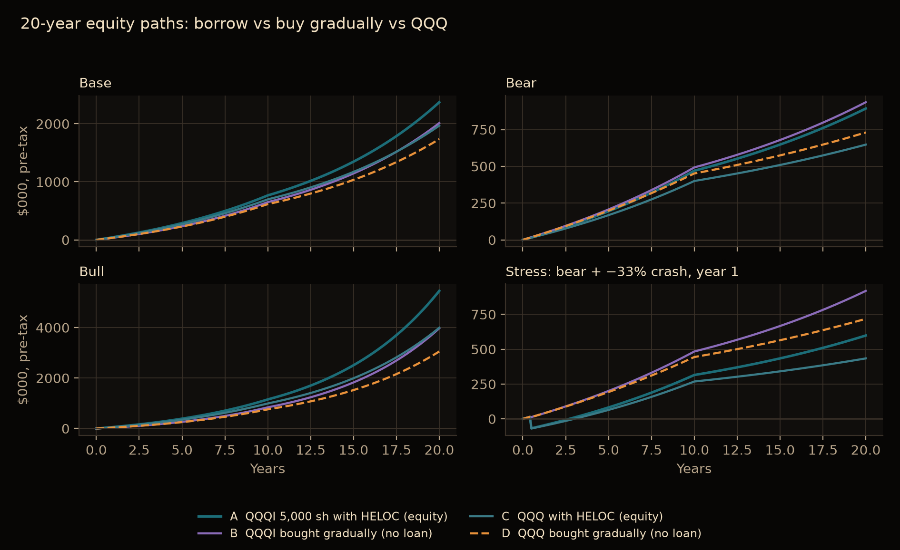
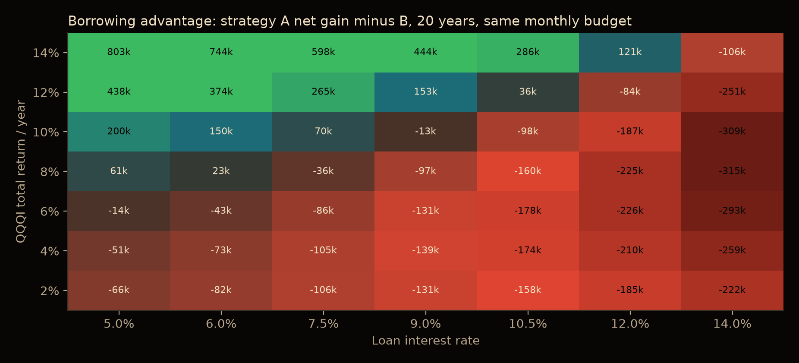

Educational research · figures as of early November 2026
QQQ vs QQQI
How the monthly income in a Nasdaq-100 covered-call ETF is made, what it costs in upside, and when borrowing to buy it did — and did not — beat buying gradually.
By SIFT · Data researched November 9, 2026 · Not financial advice
Educational only — not financial advice, and SIFT does not recommend leverage. This page condenses a 20-year scenario model of financing 5,000 shares of QQQI. The figures are hypothetical, dated, and can be wrong. Nothing here is a recommendation to buy QQQ, QQQI, or any security, or to borrow money. Read the fund prospectus, and consult a licensed financial advisor and a tax professional before acting.
QQQI price / NAV
$49.48 / $49.50 Close, November 6, 2026
Distribution rate
14.1–15.4% Sponsor on NAV vs. on that price
Latest monthly payout
$0.6343 Per share, paid October 23, 2026
Expense ratio
0.68% QQQ’s is 0.18%
QQQ is Invesco’s Nasdaq-100 ETF. QQQI is the NEOS Nasdaq-100 High Income ETF, launched January 29, 2024. Both hold the same kind of large Nasdaq stocks. QQQI also sells call options on the Nasdaq-100 Index (NDX) and pays the option premium out as a monthly distribution. That payout is often described as a ~14% “dividend.” The cash is real, but a large share of it has been classified as return of capital, and the calls cap upside in strong rallies. What matters is total return — distributions plus any change in net asset value — not the headline yield.
What QQQI is, versus QQQ
QQQ tracks the Nasdaq-100 with a 0.18% expense ratio. Its calendar-year total returns were +25.6% in 2024, +20.8% in 2025, and −32.6% in 2022. QQQI is actively managed, with about $14.3 billion in net assets as of November 9, 2026, and top holdings such as Apple 8.4%, Nvidia 7.6%, Microsoft 6.7% and Amazon 4.7%. Its expense ratio is 0.68%.
How the ~14% monthly income works
The cash comes mainly from option premium, not from stock dividends. The 30-day SEC yield was −0.05% as of the data date, which shows how little of the payout is ordinary dividend income.
NDX index options are Section 1256 contracts. Their gains and losses are taxed 60% long-term and 40% short-term no matter how long they are held. The fund also tax-loss harvests inside the portfolio. That is why most of the distribution has been labeled return of capital (ROC). IRS Form 8937 shows 99.6% of each June–December 2025 distribution as nontaxable ROC. ROC is not taxed now, but it lowers your cost basis, so you typically pay more capital-gains tax when you sell.
The monthly payout has been fairly steady in dollars, between $0.53 and $0.66 a share (average $0.622). It is set each month and is not guaranteed. The latest payment, on October 23, 2026, was $0.6343 a share. Trailing 12-month distributions were $7.63 a share.

QQQI monthly distribution per share, February 2024 through October 2026. The dollar payout has been steady; it is not guaranteed. Average $0.622. Source: NEOS.
Why 14.1% versus 15.4%? NEOS annualizes the latest payout and divides by the ex-date NAV, which gave a 14.09% distribution rate as of October 31, 2026 (12-month trailing 14.13%). Dividing the same payout by the lower November 6 price of $49.48 gives about 15.4%. The model used 14.1% of NAV as the base case, which is more conservative than that 15.4% run-rate.
Key facts for QQQI, early November 2026
Item
Value
As of
Market price / NAV
$49.48 / $49.50
November 6, 2026
Latest distribution
$0.6343 / share
Paid October 23, 2026
Trailing 12-month distributions
$7.63 / share
Through October 2026
Distribution rate (sponsor)
14.09% (12-mo trailing 14.13%)
October 31, 2026
Rate on November 6 price (latest × 12)
≈15.4%
November 6, 2026
30-day SEC yield
−0.05%
Data date
Expense ratio
0.68%
Sponsor
Next ex-date / pay date
November 18 / November 20, 2026
As published
Inception / net assets
January 29, 2024 / about $14.3B
November 9, 2026
Figures as of early November 2026. Prices and rates were researched November 9, 2026.
The key tradeoffs
Covered calls cap the upside
When the fund sells a call, it gives up gains above the strike in return for premium. In strong rallies QQQI lags the index. As of October 31, 2026, QQQI had returned 16.63% a year since inception versus 19.81% for the Nasdaq-100 Index — about 3.2 points a year behind.
Yield is not return
A distribution rate above the fund’s real total return has to come out of net asset value. Part of the “income” can be your own capital coming back as ROC.
NAV can erode both ways
In a sharp drop the fund falls with the index; premium only cushions it a little. In a sharp rally the calls cap the rebound. Since inception the share price was roughly flat (about +2.4% total price change) even though the Nasdaq-100 Index returned about 65%. Almost all of the return has come from distributions.
The track record is short
QQQI has under three years of history and has never been through a full bear market like 2022. Every 20-year projection on this page is an assumption, not an extrapolation.
October 31, 2026
1 year
Since inception (cum.)
Annualized
QQQI (NAV)
7.09%
52.82%
16.63%
QQQI (market)
7.13%
52.79%
16.63%
Nasdaq-100 Index
10.47%
64.55%
19.81%
Cboe NDX BuyWrite (BXN)
13.60%
42.92%
13.83%
Source: NEOS, as of October 31, 2026.
Borrow, buy gradually, or buy QQQ
A common pitch is to borrow to buy 5,000 shares of QQQI — about $247,400 at the November 6, 2026 close of $49.48 — send the monthly distributions to the lender, then reinvest after the loan is gone. At the October run-rate, 5,000 shares would pay about $3,172 a month, roughly twice the interest on a 7.49% HELOC ($1,544 a month). That cash spread looks wide, but it is not profit. Covered-call funds tend to lose NAV over time, and a large part of the payout has been return of capital. The real test is whether QQQI’s total return beats the borrowing rate.
The model compared four strategies, each spending the same $2,935 a month — a 10-year HELOC payment at the Bankrate average of 7.49% as of November 4, 2026 — for 10 years, or $352,000 of the investor’s own cash:
A. Buy 5,000 shares of QQQI with that HELOC. Distributions go to the loan, then are reinvested (DRIP).
B. Buy QQQI gradually, with no loan.
C. Buy QQQ in a lump sum on the same HELOC, paid from the same budget.
D. Buy QQQ gradually, with no loan.
Assumptions, all labeled as such: distributions move with NAV; a 5% tax drag on QQQI distributions (2025 payouts were about 99.6% ROC); 90% of each payout treated as ROC that lowers basis; QQQ dividends of 0.46% taxed at 15%; everything sold at year 20 with 20% tax on gains over adjusted basis; loan rates held constant; no forced margin liquidation. Implied QQQI total return is about 12% a year in the base case, 7% in the bear case, and 16.5% in the bull case. The base case is generous: since inception QQQI has trailed the Nasdaq-100 by about 3 points a year, while here it roughly matches QQQ.
On a small screen this table shows net gain and payoff time. Turn the phone sideways or use a wider window to see ending values too. Every row puts in the same $352k.
Strategy
Net gain
Loan paid off
Own cash in
Ending value (pre-tax)
After tax and loan
Base — QQQI yield 14.1%, NAV −2.0%/yr, QQQ 11%/yr total
A · QQQI 5,000 sh on HELOC, then DRIP
$1.63M
10.0 yrs
$352k
$2.37M
$1.98M
B · QQQI gradually, no loan
$1.35M
n/a
$352k
$2.01M
$1.70M
C · QQQ lump sum on HELOC
$1.28M
10.0 yrs
$352k
$1.97M
$1.64M
D · QQQ gradually, no loan
$1.12M
n/a
$352k
$1.74M
$1.47M
Bear — QQQI yield 10.0%, NAV −3.0%/yr, QQQ 5%/yr total
A · QQQI 5,000 sh on HELOC, then DRIP
$421k
10.0 yrs
$352k
$893k
$774k
B · QQQI gradually, no loan
$476k
n/a
$352k
$936k
$828k
C · QQQ lump sum on HELOC
$222k
10.0 yrs
$352k
$647k
$574k
D · QQQ gradually, no loan
$309k
n/a
$352k
$730k
$661k
Bull — QQQI yield 15.4%, NAV +1.0%/yr, QQQ 15%/yr total
A · QQQI 5,000 sh on HELOC, then DRIP
$4.13M
9.1 yrs
$352k
$5.45M
$4.48M
B · QQQI gradually, no loan
$2.93M
n/a
$352k
$3.97M
$3.28M
C · QQQ lump sum on HELOC
$2.91M
10.0 yrs
$352k
$3.99M
$3.27M
D · QQQ gradually, no loan
$2.18M
n/a
$352k
$3.05M
$2.53M
Stress — bear case, plus a 2022-style −33% drop in month 6
A · QQQI 5,000 sh on HELOC, then DRIP
$183k
10.0 yrs
$352k
$598k
$535k
B · QQQI gradually, no loan
$462k
n/a
$352k
$918k
$814k
C · QQQ lump sum on HELOC
$49k
10.0 yrs
$352k
$434k
$401k
D · QQQ gradually, no loan
$298k
n/a
$352k
$718k
$651k
Net gain = after-tax ending value − any remaining loan − cash put in (not discounted). The leading strategy in each scenario is shown in green. Same $2,935/month budget for 10 years in every row.

Twenty-year after-tax net gain. Borrowing leads when returns are strong; buying gradually with no loan leads when they are not.

Pre-tax equity (value minus loan) over 20 years. In the stress case both leveraged strategies are underwater for about two years, by as much as $76,000.
In the base case, borrowing leads: about $1.63 million after tax versus $1.35 million for gradual QQQI and $1.12 million for gradual QQQ. In the bear case (yield 10%, NAV falling 3% a year), not borrowing wins: $476,000 versus $421,000. Add a 2022-style −33% drop in month 6, and the leveraged plan ends at $183,000 versus $462,000 without a loan.
Distributions alone barely amortize a 10-year HELOC. The payment is $2,935 a month. At today’s run-rate the distribution covers it (about 103% after a small tax haircut). In the base case it falls a little short, so the budget adds about $52,000 over 10 years. In the bear case you would add about $150,000.
Rule of thumb from the model: borrowing only helped when QQQI’s total return beat the loan rate by roughly 2 or more percentage points a year. At 10–12% rates — Schwab/Fidelity margin at 10.575%, or a typical unsecured personal loan at 12.36% — it rarely pays. At an 8% total return, a 7.5% HELOC already loses. If the Nasdaq returns a more typical ~10% and QQQI trails by ~3 points, QQQI could land near 7–8%, which is below today’s HELOC and most broker margin rates.

Borrowing advantage: strategy A’s 20-year net gain minus strategy B’s, with the same monthly budget. Green means borrowing helped; red means it hurt. The green cells start roughly two points above the loan rate.
SIFT does not recommend leverage. This is an educational comparison of how financing would work and where it breaks, not a recommendation to borrow. The path with no loan — buying QQQI or QQQ gradually from savings, with distributions reinvested — has no margin-call or home risk, and it won in both the bear and the stress cases.
Disclaimer
This page is for educational purposes only. It is not financial, investment, tax or legal advice, and not a recommendation to buy QQQI or any security or to borrow money. Projections are hypothetical, depend on stated assumptions, and are not guarantees. Actual results will differ and can include loss of principal greater than the amount invested when leverage is used. Past performance does not guarantee future results. Read the fund prospectus, and consult a licensed financial advisor and a qualified tax professional before acting.
Sources
NEOS Investments, QQQI fund page (price and NAV on November 6, 2026; distribution rate, $0.6343 payout, 0.68% fee, inception, performance, holdings, ROC language): neosfunds.com/qqqi
NEOS, QQQI IRS Form 8937 (December 31, 2025): 99.597% return of capital for June–December 2025 distributions.
Bankrate average HELOC rate, November 4, 2026 (7.49%). Interactive Brokers, Schwab and Fidelity published margin schedules, early November 2026. Bankrate average unsecured personal-loan rate (12.36%).
ETFreplay and Invesco: QQQ calendar-year total returns and 0.18% expense ratio. WSJ / FedPrimeRate: prime rate 7.00%, effective September 17, 2026.
Full model, assumptions and loan-by-loan tables: SIFT, “QQQI Financing — 20-Year Educational Plan,” November 2026. Data researched November 9, 2026.